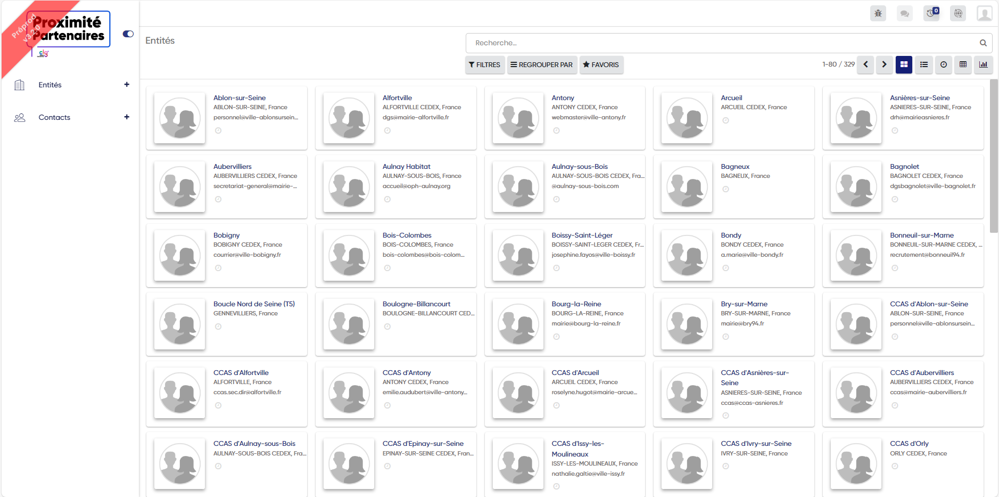

De Castro Hugo
Présentation
Centre Interdépartemental de Gestion (CIG) de la petite couronne
Le Centre Interdépartemental de Gestion de la petite couronne de la région d’Ile-de-France, dit CIG Petite Couronne, est un établissement public administratif.
Ses missions, définies par la loi, portent sur la gestion des agents territoriaux de la petite couronne : Hauts-de-Seine, Seine-Saint-Denis et Val-de-Marne.
Relevant du statut de la fonction publique territoriale, ces agents sont au nombre de 150 000, dont plus de 100 000 fonctionnaires territoriaux.
Le CIG est financé par les collectivités territoriales et des établissements publics de la petite couronne, qui lui sont affiliés volontairement ou obligatoirement selon leurs effectifs. La plupart des quelque 345 collectivités territoriales et établissements publics de la petite couronne sont volontairement affiliés.
Le CIG intervient de façon neutre pour l’ensemble des collectivités de la petite couronne. Il leur permet de mutualiser des ressources afin de disposer de conseils et de prestations dans le domaine de la gestion des ressources humaines efficients et aux meilleurs coûts.
Présentation de l'outil en cours de développement
Création d'un GRC sous le nom en interne de Asgard mais sous nom publique "Proximité Partenaire"
La GRC (Gestion de la Relation Client) est aujourd'hui plus connue sous le terme anglophone de CRM (Customer Relationship Management). C'est une technique marketing et commerciale visant à mieux capter et analyser les données des clients ou prospects pour créer une relation de proximité et mieux les fidéliser.
Asgard vise donc à faciliter les échanges entre les collectivités et les centres de gestion.
Asgard au sein du CIG petite couronne cherche à être utilisé parmis les 300 agents qui la compose, déjà près de 150 agents connectés depuis janvier 2024, ce GRC est d'envergure mondiale et cherche à se démarquer.
Il est réaliser avec le logiciel Odoo qui est un éditeur de logiciels dont le code source est ouvert à la modification, redistribution, utilisation par les utilisateurs.
Voici son interface:
Dans les différents projet énuméré ci-dessous, il s'agit toujours (sauf une exception) de projet en lien avec ce GRC